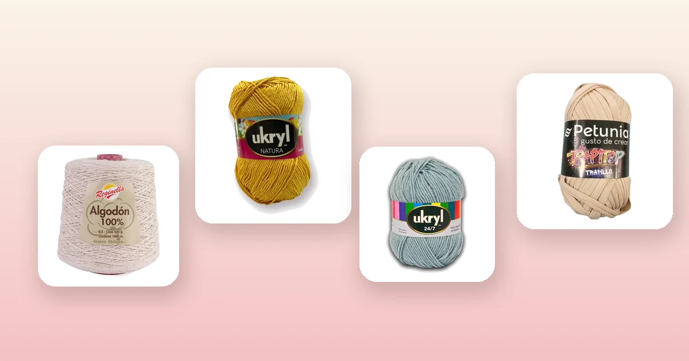

Guías de materiales
Cuánta lana necesito para tejer: tabla por proyecto
«¿Cuántos ovillos compro?» es la pregunta que más nos llega, y la respuesta honesta es que depende del grosor del hilo y del punto, no del peso del ovillo. Aquí tienes la tabla por proyecto para salir del paso, la fórmula para calcularlo con tu propia muestra y el rendimiento real de cada hilo del catálogo, con su precio por metro.

La respuesta rápida
Si llegaste buscando un número, aquí lo tienes. Son cantidades para un adulto, con hilo de grosor medio y punto de crochet o palillos estándar:
| Proyecto | Gramos | Metros | Ovillos de 100 g |
|---|---|---|---|
| Posavasos o individual | 30 a 60 g | 70 a 140 m | 1 |
| Gorro de adulto | 80 a 120 g | 180 a 280 m | 1 a 2 |
| Cuello o bufanda corta | 100 a 150 g | 230 a 350 m | 1 a 2 |
| Bufanda larga | 200 a 300 g | 450 a 700 m | 2 a 3 |
| Amigurumi mediano | 50 a 100 g | 110 a 230 m | 1 |
| Zapatitos de bebé | 40 a 60 g | 90 a 140 m | 1 |
| Chaleco de bebé | 150 a 250 g | 350 a 580 m | 2 a 3 |
| Chaleco de adulto | 350 a 600 g | 800 a 1.400 m | 4 a 6 |
| Manta de bebé (80 × 100 cm) | 400 a 600 g | 900 a 1.400 m | 4 a 6 |
| Manta de plaza y media | 1.200 a 1.800 g | 2.800 a 4.200 m | 12 a 18 |
| Bolso mediano | 250 a 400 g | 600 a 900 m | 3 a 4 |
Son rangos amplios a propósito, y el resto de esta guía explica por qué y cómo estrecharlos hasta un número que puedas usar para comprar.
Por qué se calcula en metros y no en ovillos
«Necesito tres ovillos» no significa nada por sí solo. Dos ovillos del mismo peso pueden traer cantidades de hilo completamente distintas según su grosor:
- Un ovillo de Ukryl Natura de 100 g trae 250 metros, porque es un hilo fino.
- Un ovillo de Ukryl 24/7 de 100 g trae 150 metros, porque es de grosor medio.
- Un ovillo de trapillo Petunia de 100 g trae 34 metros, porque es una cinta de tela gruesa.
Los tres pesan lo mismo y el último rinde más de siete veces menos que el primero. Por eso lo que se calcula es la longitud, y solo al final se traduce a ovillos dividiendo por los metros que trae cada uno. Si quieres entender mejor las diferencias entre materiales, tenemos una guía dedicada a los tipos de lana para tejer.
Cómo influyen el grosor y el punto
Dos factores modifican el cálculo bastante más de lo que la gente espera:
El grosor del hilo. Cuanto más grueso, menos metros necesitas para cubrir la misma superficie, pero más gramos. Un chal en hilo fino puede llevar 800 metros y 320 gramos; el mismo chal en lana gruesa, 300 metros y 500 gramos.
El punto. Esta es la parte que más sorprende:
| Punto | Consumo | Comentario |
|---|---|---|
| Punto alto (crochet) | Referencia | Es el punto de crochet más rendidor de los básicos. |
| Punto bajo (crochet) | +25 a +35% | Mucho más denso: usa bastante más hilo por centímetro. |
| Punto jersey (palillos) | −15 a −20% | Los palillos rinden más que el crochet en general. |
| Punto elástico (palillos) | +20 a +30% | Se encoge a lo ancho, así que hay que tejer más puntos. |
| Puntos calados | −20 a −40% | Los espacios abiertos son hilo que no se usa. |
Como regla práctica: el crochet consume alrededor de un 30% más de hilo que los palillos para la misma prenda. Si vienes de tejer a palillos y este es tu primer proyecto a crochet, no compres la misma cantidad de siempre.
Calcúlalo con tu propia muestra
Las tablas sirven para salir del paso. Si quieres el número exacto para tu proyecto, tu hilo y tu forma de tejer, hay un método que nunca falla y toma veinte minutos.
- Pesa tu ovillo antes de empezar, o fíjate en la etiqueta.
- Teje una muestra de 10 × 10 cm con el hilo, el ganchillo y el punto definitivos.
- Deshazla y mide el hilo que usaste. O más fácil: pesa la muestra en una balanza de cocina.
- Calcula la superficie total de tu proyecto en centímetros cuadrados (ancho × alto de cada pieza, sumando todas).
- Divide y multiplica.
| Paso | Dato |
|---|---|
| Peso de la muestra de 10 × 10 cm | 5 g |
| Superficie del chaleco | Espalda 52 × 58 cm + 2 delanteros de 24 × 58 cm = 5.800 cm² |
| Muestras equivalentes | 5.800 ÷ 100 = 58 |
| Peso estimado | 58 × 5 g = 290 g |
| Más un 20% de margen | 348 g |
| Ovillos de 100 g | 4 ovillos |
Ese margen del 20% no es capricho: cubre los bordes, las costuras, los remates, el hilo que se pierde al deshacer y el error de la propia muestra. Si vas a tejer un chaleco a crochet siguiendo nuestra guía, la tabla de ovillos por talla ya trae ese margen incluido.
Cuánto rinde cada hilo de VendoLanas
Para que puedas hacer el cálculo con lo que tenemos en la tienda, estos son los metros y el precio por metro de cada línea:
| Producto | Peso | Metros | Precio | Precio por 100 m |
|---|---|---|---|---|
| Cono de algodón Reginella | 500 g | 1.690 m | $5.000 | $296 |
| Ukryl Natura | 100 g | 250 m | $1.500 | $600 |
| Ukryl Extra | 100 g | 220 m | $1.300 | $591 |
| Petunia Spray Lúrex | 100 g | 230 m | $2.200 | $957 |
| Ukryl 24/7 | 100 g | 150 m | $2.000 | $1.333 |
| Trapillo Petunia Trapitop | 100 g | 34 m | $1.700 | $5.000 |
| Ukryl Cotton Premium | 100 g | No lo declara la etiqueta | $2.300 | — |
Dos líneas del catálogo no traen el metraje en la etiqueta: el hilo Cotton Premium y la lana chenille Happy Soft. En esos casos el cálculo se hace por peso, con el método de la muestra que acabas de ver, o nos escribes y lo medimos nosotros.
Esa última columna explica por qué un cono de algodón conviene tanto en proyectos grandes: un cono rinde lo mismo que casi siete ovillos de hilo fino y, además, al ser una bobina continua tejes sin empalmar hebras. Para una manta grande la diferencia de precio es considerable.
Compra todo del mismo lote, y de una vez
Este es el consejo que más disgustos evita. Los hilos se tiñen por lotes, y dos ovillos del mismo color pero de lotes distintos pueden tener una diferencia de tono que no se nota en la tienda y sí se nota en la prenda terminada, como una franja.
- Compra todo junto y revisa que los ovillos tengan el mismo número de lote en la etiqueta.
- Compra uno de más si el cálculo te queda justo. Es más barato que quedarse corto y no encontrar el mismo lote después.
- Si de todos modos tienes que mezclar lotes, altérnalos cada dos vueltas: la transición se disimula casi por completo.
- En hilos matizados la diferencia de lote se nota menos, porque el color ya cambia solo a lo largo del ovillo.
Errores comunes al calcular
- Comparar ovillos por peso. Cien gramos de un hilo y cien gramos de otro pueden rendir siete veces distinto.
- Usar el cálculo de palillos para un proyecto de crochet. Súmale un 30%.
- Olvidar los bordes y el cuello. En una prenda pueden ser el 10% del total.
- No contar las dos mangas. Parece una broma, pero pasa: las mangas suman cerca de un tercio de un suéter.
- Medir la muestra sin bloquear. Después de mojarla y secarla, la muestra suele crecer, y con ella el consumo real.
- Comprar justo. Deja siempre un 15 o 20% de margen.